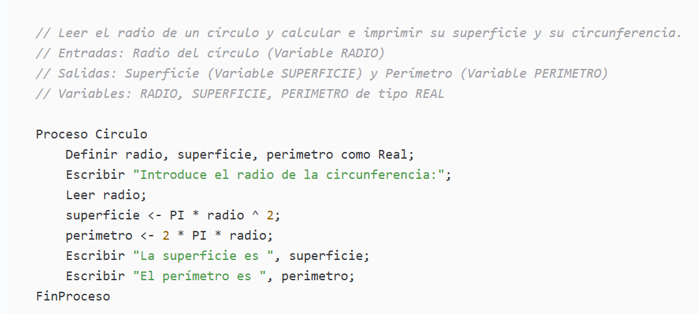

Sección 01
Pseudocódigo
¿Qué es?
Es una forma de describir un algoritmo usando un lenguaje similar al natural (español, inglés), combinado con estructuras propias de la programación, pero sin seguir la sintaxis estricta de ningún lenguaje de programación en particular. Esto quiere decir que podemos llevar o adaptar este tipo de código a muchos de los lenguajes de programación conocidos.
Es como un "borrador" o "boceto" de un programa: describe la lógica y los pasos a seguir, pero de forma legible para cualquier persona, no solo para una computadora.
¿Para qué sirve?
- Planificar la solución de un problema antes de escribir código real.
- Estructurado: usa palabras clave como Inicio, Fin, Si, Mientras, Para, Leer, Escribir.
- Fácil de entender: cualquier persona con conocimientos básicos de lógica puede leerlo.
- No es ejecutable: no puede correr directamente en una computadora, debe traducirse a un lenguaje real.
- Flexible: no tiene una norma única, aunque sí convenciones comunes.
- Enfocado en la lógica, no en detalles técnicos (como tipos de datos exactos o memoria).
Características
- Independiente del lenguaje: no está atado a Python, Java, C++, etc.
- Comunicar ideas entre programadores sin importar el lenguaje que usen.
- Facilitar el aprendizaje de la lógica de programación sin preocuparse por errores de sintaxis.
- Detectar errores lógicos antes de invertir tiempo escribiendo código.
- Servir de puente entre el diagrama de flujo (representación gráfica) y el código fuente (representación en un lenguaje específico).
Ejemplo Práctico:
